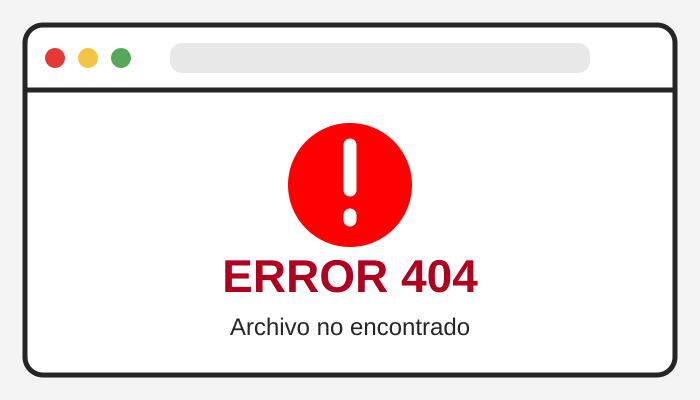
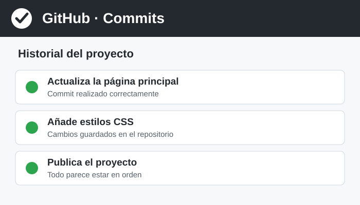

Descripción del incidente

El sujeto afirma haber realizado correctamente la entrega, aunque no existe evidencia conocida de dicha acción.
Indicios encontrados
- No existe commit.
- No existe push.
- No existe captura.
- GitHub funciona con absoluta normalidad.
Declaración del sospechoso
“Yo lo vi subir. Salió una cosa verde y todo.”
Evidencias del caso
Material recopilado:

Veredicto provisional
Nivel de credibilidad: preocupantemente bajo.